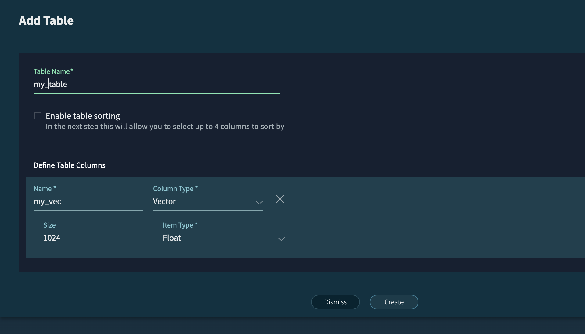

Vector DB Quickstart#
Prerequisites#
Ensure you have followed the instructions Query Engine to setup the query engine and download the adbc driver.
!pip install vastdb pyarrow adbc_driver_manager numpy
Requirement already satisfied: vastdb in /opt/conda/lib/python3.11/site-packages (2.0.0)
Requirement already satisfied: pyarrow in /opt/conda/lib/python3.11/site-packages (18.1.0)
Requirement already satisfied: adbc_driver_manager in /opt/conda/lib/python3.11/site-packages (1.8.0)
Requirement already satisfied: numpy in /opt/conda/lib/python3.11/site-packages (1.24.4)
Requirement already satisfied: aws-requests-auth in /opt/conda/lib/python3.11/site-packages (from vastdb) (0.4.3)
Requirement already satisfied: ibis-framework~=10.1 in /opt/conda/lib/python3.11/site-packages (from vastdb) (10.8.0)
Requirement already satisfied: pyarrow-hotfix==0.7 in /opt/conda/lib/python3.11/site-packages (from vastdb) (0.7)
Requirement already satisfied: flatbuffers in /opt/conda/lib/python3.11/site-packages (from vastdb) (25.9.23)
Requirement already satisfied: packaging in /opt/conda/lib/python3.11/site-packages (from vastdb) (23.2)
Requirement already satisfied: pandas in /opt/conda/lib/python3.11/site-packages (from vastdb) (2.1.1)
Requirement already satisfied: requests in /opt/conda/lib/python3.11/site-packages (from vastdb) (2.32.5)
Requirement already satisfied: xmltodict in /opt/conda/lib/python3.11/site-packages (from vastdb) (1.0.2)
Requirement already satisfied: backoff==2.2.1 in /opt/conda/lib/python3.11/site-packages (from vastdb) (2.2.1)
Requirement already satisfied: typing-extensions in /opt/conda/lib/python3.11/site-packages (from adbc_driver_manager) (4.8.0)
Requirement already satisfied: atpublic>=2.3 in /opt/conda/lib/python3.11/site-packages (from ibis-framework~=10.1->vastdb) (6.0.2)
Requirement already satisfied: parsy>=2 in /opt/conda/lib/python3.11/site-packages (from ibis-framework~=10.1->vastdb) (2.2)
Requirement already satisfied: python-dateutil>=2.8.2 in /opt/conda/lib/python3.11/site-packages (from ibis-framework~=10.1->vastdb) (2.8.2)
Requirement already satisfied: sqlglot!=26.32.0,>=23.4 in /opt/conda/lib/python3.11/site-packages (from ibis-framework~=10.1->vastdb) (27.27.0)
Requirement already satisfied: toolz>=0.11 in /opt/conda/lib/python3.11/site-packages (from ibis-framework~=10.1->vastdb) (0.12.0)
Requirement already satisfied: tzdata>=2022.7 in /opt/conda/lib/python3.11/site-packages (from ibis-framework~=10.1->vastdb) (2023.3)
Requirement already satisfied: charset_normalizer<4,>=2 in /opt/conda/lib/python3.11/site-packages (from requests->vastdb) (3.3.0)
Requirement already satisfied: idna<4,>=2.5 in /opt/conda/lib/python3.11/site-packages (from requests->vastdb) (3.4)
Requirement already satisfied: urllib3<3,>=1.21.1 in /opt/conda/lib/python3.11/site-packages (from requests->vastdb) (1.26.20)
Requirement already satisfied: certifi>=2017.4.17 in /opt/conda/lib/python3.11/site-packages (from requests->vastdb) (2023.7.22)
Requirement already satisfied: pytz>=2020.1 in /opt/conda/lib/python3.11/site-packages (from pandas->vastdb) (2023.3.post1)
Requirement already satisfied: six>=1.5 in /opt/conda/lib/python3.11/site-packages (from python-dateutil>=2.8.2->ibis-framework~=10.1->vastdb) (1.16.0)
Insert Data#
import pyarrow as pa
import vastdb
from adbc_driver_manager import dbapi
import datetime as dt
# Define parameters, for example:
VAST_ADBC_DRIVER_PATH = '/home/jovyan/christian/libadbc_driver.so'
VASTDB_ENDPOINT = 'http://172.200.202.40'
AWS_ACCESS_KEY_ID = 'P7BEKS9TSY51OATTOOB6'
AWS_SECRET_ACCESS_KEY = 'YK7SGtjOR93zxuK1tozQCjSF/Dyl3sH974uml+6b'
BUCKET_NAME = 'cneundorf-db'
SCHEMA_NAME = 'test'
TABLE_NAME = 'vectors_103'
# Create the table and insert data using VastDB SDK, for more information https://github.com/vast-data/vastdb_sdk?tab=readme-ov-file
session = vastdb.connect(
endpoint=VASTDB_ENDPOINT,
access=AWS_ACCESS_KEY_ID,
secret=AWS_SECRET_ACCESS_KEY)
with session.transaction() as tx:
bucket = tx.bucket(BUCKET_NAME)
# Create the schema in the bucket.
schema = bucket.schema(SCHEMA_NAME) or bucket.create_schema(SCHEMA_NAME)
# Create the table.
dimension = 5
columns = pa.schema([("id", pa.int64()),
("vec", pa.list_(pa.field(name="item", type=pa.float32(), nullable=False), dimension)),
('vec_timestamp', pa.timestamp('us'))])
table = schema.table(TABLE_NAME) or schema.create_table(TABLE_NAME, columns)
# Insert a few rows of data.
arrow_table = pa.table(schema=columns, data=[
[1, 2, 3],
[[1,2,3,4,5], [6, 7, 8, 9, 10], [11, 12, 13, 14, 15]],
[dt.datetime(2024, 4, 10, 12, 34),
dt.datetime(2024, 4, 11, 12, 34),
dt.datetime(2024, 4, 13, 12, 34)]
])
table.insert(arrow_table)
import vastdb
import pyarrow as pa
import datetime as dt
# --- Assume these variables are defined ---
# VASTDB_ENDPOINT = "your_endpoint_url"
# AWS_ACCESS_KEY_ID = "your_access_key"
# AWS_SECRET_ACCESS_KEY = "your_secret_key"
# BUCKET_NAME = "cneundorf-db"
# SCHEMA_NAME = "test"
# TABLE_NAME = "vectors_101"
# ------------------------------------------
session = vastdb.connect(
endpoint=VASTDB_ENDPOINT,
access=AWS_ACCESS_KEY_ID,
secret=AWS_SECRET_ACCESS_KEY
)
print("Connecting to VAST...")
with session.transaction() as tx:
print(f"Starting transaction {tx.txid}...")
bucket = tx.bucket(BUCKET_NAME)
# Get or create the schema
schema = bucket.schema(SCHEMA_NAME, fail_if_missing=False) or bucket.create_schema(SCHEMA_NAME)
print(f"Using schema: {SCHEMA_NAME}")
# Define the table structure
dimension = 5
columns = pa.schema([
("id", pa.int64()),
("vec", pa.list_(pa.field(name="item", type=pa.float32(), nullable=False), dimension)),
('vec_timestamp', pa.timestamp('us'))
])
# Get or create the table
table = schema.table(TABLE_NAME, fail_if_missing=False) or schema.create_table(TABLE_NAME, columns)
print(f"Using table: {TABLE_NAME}")
# Insert a few rows of data.
arrow_table = pa.table(schema=columns, data=[
[1, 2, 3],
[[1.0, 2.0, 3.0, 4.0, 5.0], [6.0, 7.0, 8.0, 9.0, 10.0], [11.0, 12.0, 13.0, 14.0, 15.0]],
[dt.datetime(2024, 4, 10, 12, 34),
dt.datetime(2024, 4, 11, 12, 34),
dt.datetime(2024, 4, 13, 12, 34)]
])
# The transaction is automatically committed when exiting the context
print("Inserting data...")
table.insert(arrow_table)
print("Data inserted.")
print("Transaction committed.")
Connecting to VAST...
Starting transaction 65953105481905796...
Using schema: test
Using table: vectors_103
Inserting data...
Data inserted.
Transaction committed.
Query the Vector Database#
# Query the table using the ADBC driver.
def run_query(query):
with dbapi.connect(
driver=VAST_ADBC_DRIVER_PATH, db_kwargs= {
"vast.db.endpoint": VASTDB_ENDPOINT,
"vast.db.access_key": AWS_ACCESS_KEY_ID,
"vast.db.secret_key": AWS_SECRET_ACCESS_KEY}
) as connection:
with connection.cursor() as cursor:
cursor.execute(query)
display(cursor.fetch_arrow_table().to_pandas())
full_table_name = f'"{BUCKET_NAME}/{SCHEMA_NAME}"."{TABLE_NAME}"'
Select all the rows.#
run_query(
f"SELECT * FROM {full_table_name};"
)
| id | vec | vec_timestamp | |
|---|---|---|---|
| 0 | 1 | [1.0, 2.0, 3.0, 4.0, 5.0] | 2024-04-10 12:34:00 |
| 1 | 2 | [6.0, 7.0, 8.0, 9.0, 10.0] | 2024-04-11 12:34:00 |
| 2 | 3 | [11.0, 12.0, 13.0, 14.0, 15.0] | 2024-04-13 12:34:00 |
Similarity Search#
Metric |
Best Suited Use Cases |
|---|---|
Cosine Similarity |
- Text Similarity: Document search, plagiarism detection, topic modeling (where magnitude of word counts doesn’t matter as much as the overall direction/topic). |
Euclidean Distance |
- Image Recognition: Pixel-level comparisons or feature vector comparisons where exact spatial distance between features is important. |
Negative Inner Product |
- Neural Network Embeddings: Often used directly in models like BERT, where the output vectors are designed such that a higher inner product (and thus a less negative inner product) indicates higher similarity, combining both magnitude and direction. |
Euclidian distance#
run_query(
f"""
SELECT * FROM {full_table_name}
WHERE vec_timestamp > '2023-04-10 12:34:00'
ORDER BY
array_distance(vec, [1.5, 2.5, 3.5, 4.5, 5.5]::FLOAT[5])
LIMIT 2;
"""
)
| id | vec | vec_timestamp | |
|---|---|---|---|
| 0 | 1 | [1.0, 2.0, 3.0, 4.0, 5.0] | 2024-04-10 12:34:00 |
| 1 | 2 | [6.0, 7.0, 8.0, 9.0, 10.0] | 2024-04-11 12:34:00 |
Negative inner product distance#
run_query(
f"""
SELECT * FROM {full_table_name}
WHERE vec_timestamp > '2023-12-11 11:30:00'
ORDER BY
array_negative_inner_product(vec, [1.5, 2.5, 3.5, 4.5, 5.5]::FLOAT[5])
LIMIT 2;
"""
)
| id | vec | vec_timestamp | |
|---|---|---|---|
| 0 | 3 | [11.0, 12.0, 13.0, 14.0, 15.0] | 2024-04-13 12:34:00 |
| 1 | 2 | [6.0, 7.0, 8.0, 9.0, 10.0] | 2024-04-11 12:34:00 |
Cosine distance#
run_query(
f"""
SELECT * FROM {full_table_name}
WHERE vec_timestamp > '2023-04-10 12:34:00'
ORDER BY
array_cosine_distance(vec, [1.5, 2.5, 3.5, 4.5, 5.5]::FLOAT[5])
LIMIT 2;
"""
)
| id | vec | vec_timestamp | |
|---|---|---|---|
| 0 | 1 | [1.0, 2.0, 3.0, 4.0, 5.0] | 2024-04-10 12:34:00 |
| 1 | 2 | [6.0, 7.0, 8.0, 9.0, 10.0] | 2024-04-11 12:34:00 |
Using the Vast Management Interface to create a Vector Table#
A Vector Table is a standard VastDB table that has a vector column and additional columns as needed. Please see the screenshot, below:
